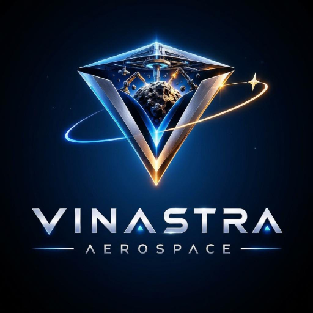

Manufacture in space
Robotic 3D printing and advanced manufacturing for structural components, tools, spacecraft parts, and future infrastructure.

VINASTRA AEROSPACEVINASTRA AEROSPACE EARLY-STAGE INDIAN SPACETECH
AI-integrated autonomous robotics, additive manufacturing, and ground-supervised construction systems for building infrastructure beyond Earth.
ENGINEERING BLUEPRINT → ORBITAL CONCEPT RENDER
VINASTRA / CURRENT POSITION
01 / ASCS architecture
ASCS, the proposed Autonomous Space Construction System, combines planning, simulation, robotics, inspection, and human supervision.
SELECT A MARKER TO EXPLORE THE PROPOSED SUBSYSTEMSPROPOSED ARCHITECTURE — THIS CONCEPTUAL VISUALIZATION DOES NOT REPRESENT DEPLOYED SPACE HARDWARE.
02 / The challenge
Payload mass, fairing volume, launch cost, astronaut time, and communication delay all constrain infrastructure beyond Earth. The proposed answer is an autonomous construction layer that people supervise from the ground.
Read the challenge ↗03 / Proposed space factory
Robotic 3D printing and advanced manufacturing for structural components, tools, spacecraft parts, and future infrastructure.
Long-term concepts for receiving, sorting, purifying, refining, and preparing extraterrestrial materials as feedstock.
Proposed robotic inspection, component replacement, maintenance, assembly, and refurbishment for spacecraft.
Future concepts for propellant storage, refuelling infrastructure, docking facilities, and logistics hubs.
Potential modules for materials science, robotics, microgravity experiments, autonomous systems, and technology testing.
Long-term support for lunar, Martian, and deep-space missions, including construction materials and replacement parts.
Coordinated AI-assisted machines could assemble factory modules, expand platforms, inspect structures, and maintain systems.
A future concept for supporting commercial research stations, habitats, and hospitality infrastructure through manufacturing and logistics.
LONG-TERM CONCEPT — THESE FACTORY FUNCTIONS ARE PROPOSED CAPABILITIES, NOT DEPLOYED SERVICES.
04 / Proposed operational architecture
Plan → Position → Print → Assemble → Inspect → Correct. Normal operation is autonomous construction; anomalies trigger recovery procedures; critical conditions place the system in a safe state for ground review.
See the prototype plan ↗05 / Long-term direction
VINASTRA is currently focused on concept design, feasibility, AI robotics R&D, CAD, and simulation. The proposed path leads from a ground-based ASCS demonstrator toward future industrial infrastructure beyond Earth.